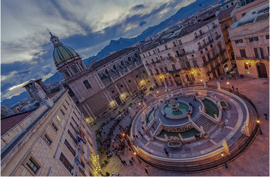
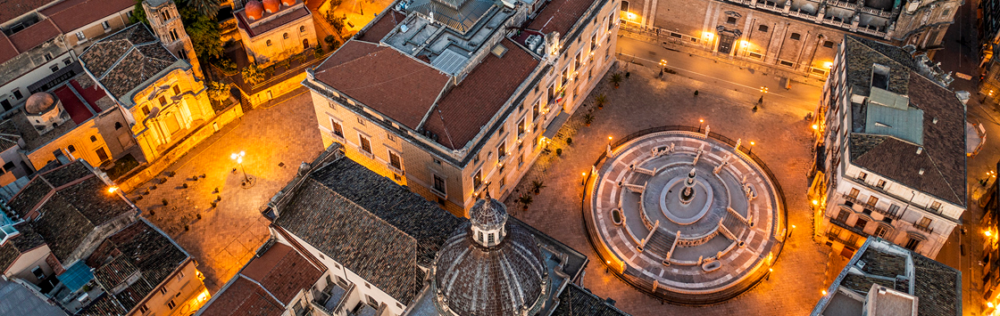
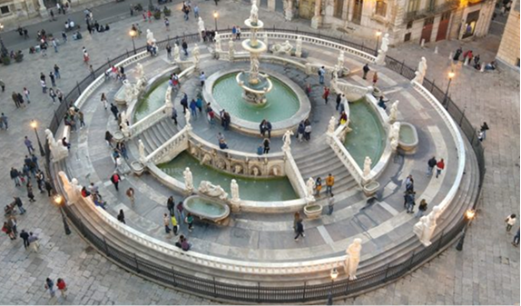
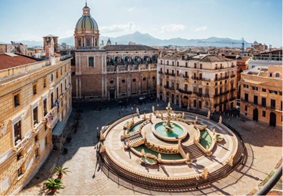

Cuore rinascimentale di Palermo
Piazza Pretoria si trova nel centro storico di Palermo, a pochi passi dai Quattro Canti. La piazza è famosa in tutta Italia per la sua fontana monumentale e per l’armonia tra arte e urbanistica che caratterizza questo spazio pubblico.
Al centro della piazza spicca la Fontana Pretoria, un capolavoro di marmo bianco realizzato nel XVI secolo. Originariamente progettata per una villa a Firenze, la fontana fu acquistata dal Senato di Palermo e trasportata in città dove fu rimontata e adattata al nuovo contesto urbano.

“Piazza della Vergnona”
La fontana, decorata con statue di figure mitologiche e divinità suscitò scalpore per la nudità delle statue. Per questo motivo i palermitani la soprannominarono “Piazza della Vergogna”.
I palermitani rimasero scandalizzati dalla nudità così evidente, soprattutto perché la piazza era circondata da edifici pubblici e religiosi. La piazza divenne oggetto pettegolezzo tanto da guadagnarsi questo soprannome.

Un' architettura di rilievo
La piazza è circondata da edifici storici significativi: il Palazzo Pretorio e la Chiesa di Santa Caterina che contribuiscono a creare un insieme urbano di grande impatto visivo e culturale.
Oggi Piazza Pretoria non è solo un capolavoro artistico, ma anche un luogo di incontro e socialità. Visitatori e cittadini si ritrovano qui per ammirare l’arte, esplorare il centro storico o semplicemente godersi l’atmosfera di una delle piazze più iconiche della Sicilia.
